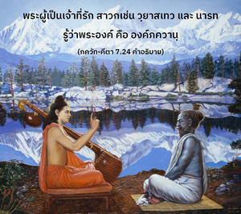

มนุษย์ผู้ด้อยปัญญาไม่รู้จักข้าอย่างสมบูรณ์คิดว่าข้า องค์ภควานฺ กฺฤษฺณทรงไร้รูปลักษณ์ในอดีต และปัจจุบันมาอยู่ในรูปลักษณ์นี้ เนื่องจากความรู้อันน้อยนิดจึงไม่รู้ธรรมชาติที่สูงกว่าของข้า ซึ่งไม่มีวันสูญสลายและสูงที่สุด



ได้อธิบายไว้ว่าพวกที่บูชาเทวดาเป็นบุคคลผู้มีปัญญาน้อย และผู้ไม่เชื่อในรูปลักษณ์ก็เช่นกัน องค์ภควานฺในรูปลักษณ์องค์กฺฤษฺณทรงประทับอยู่ต่อหน้า อรฺชุน ณ ที่นี้ แต่เนื่องด้วยอวิชชาพวกที่ไม่เชื่อในรูปลักษณ์เถียงว่า ในที่สุดองค์ภควานฺทรงไม่มีรูปลักษณ์ ยามุนาจารฺย สาวกผู้ยิ่งใหญ่ในสาย ปรมฺปรา ของ รามานุชาจารฺย ได้เขียนสองโศลกที่เหมาะสมเกี่ยวกับประเด็นนี้ไว้ดังนี้
ตวาม ศีละ-รูปะ-จะริไตห์ ปะระมะ-ปรักฤษไฏห์
สัตตเวนะ สาตตวิกะตะยา ประพะไลศ จะ ศาสไตรห์
ปรัขยาตะ-ไทวะ-ปะระมารถะ-วิทาม มะไตศ จะ
ไนวาสุระ-ปรักฤตะยะห์ ประภะวันติ โพทธุม
“พระผู้เป็นเจ้าที่รัก สาวกเช่น วฺยาสเทว และ นารท รู้ว่าพระองค์ คือ องค์ภควานฺจากการเข้าใจวรรณกรรมพระเวทเราจะสามารถรู้ถึงบุคลิกลักษณะของพระองค์ รูปลักษณ์ของพระองค์ และกิจกรรมต่างๆ ของพระองค์ และเราสามารถเข้าใจว่าพระองค์ คือ บุคลิกภาพสูงสุดแห่งพระเจ้า แต่พวกที่อยู่ในระดับตัณหา ระดับอวิชชา และเหล่ามารที่ไม่ใช่สาวกไม่สามารถเข้าใจพระองค์ ไม่ว่าพวกนี้จะมีความชำนาญมากเพียงใดในการสนทนา เวทานฺต, อุปนิษทฺ และวรรณกรรมพระเวทเล่มอื่นๆ ก็เป็นไปไม่ได้ที่จะเข้าใจองค์ภควานฺ” (โสฺตตฺร-รตฺน 12)
ใน พฺรหฺม-สํหิตา ได้กล่าวไว้ว่า เราจะไม่สามารถเข้าใจองค์ภควานฺจากการศึกษาวรรณกรรม เวทานฺต แต่ด้วยพระเมตตาขององค์ภควานฺเท่านั้นที่ทำให้เรารู้ถึงองค์ภควานฺ ดังนั้น ในโศลกนี้ได้กล่าวไว้อย่างชัดเจนว่า ไม่เพียงแต่พวกที่บูชาเทวดาเท่านั้นที่ด้อยปัญญา แต่พวกไม่ใช่สาวกที่ศึกษา เวทานฺต และคาดคะเนเกี่ยวกับวรรณกรรมพระเวทโดยไม่ประสานกับกฺฤษฺณจิตสำนึกที่แท้จริง ความจริงแล้วพวกนี้ก็ด้อยปัญญาเช่นกัน และเป็นไปไม่ได้ที่จะเข้าใจธรรมชาติส่วนพระองค์ขององค์ภควานฺ มีการอธิบายไว้ว่าพวกที่อยู่ภายใต้ความรู้สึกที่ว่าสัจธรรมนั้นไร้รูปลักษณ์เป็น อพุทฺธยห์ ซึ่งหมายถึงพวกที่ไม่รู้ลักษณะสูงสุดของสัจธรรม ได้กล่าวไว้ใน ศฺรีมทฺ-ภาควตมฺ ว่าความรู้แจ้งสูงสุดเริ่มจาก พฺรหฺมนฺ อันไร้รูปลักษณ์ จากนั้นก็เจริญขึ้นไปถึงอภิวิญญาณผู้ประทับอยู่ภายในหัวใจของทุกคน แต่คำสุดท้ายของสัจธรรมที่สมบูรณ์คือองค์ภควานฺ พวกที่ไม่เชื่อในรูปลักษณ์สมัยปัจจุบันก็เป็นผู้ด้อยปัญญาเช่นเดียวกัน เพราะยังไม่ปฏิบัติตามชังคะราชารยะบรรพบุรุษผู้ยิ่งใหญ่ของพวกตน ซึ่งกล่าวอย่างเจาะจงว่าองค์กฺฤษฺณ คือ บุคลิกภาพสูงสุดแห่งพระเจ้า ดังนั้น พวกไม่เชื่อในองค์ภควานฺ และไม่รู้สัจธรรมสูงสุดคิดว่าองค์กฺฤษฺณทรงเป็นเพียงบุตรของ เทวกี และ วสุเทว หรือเป็นเพียงเจ้าชายองค์หนึ่ง หรือเป็นสิ่งมีชีวิตที่มีพลังอำนาจ เช่นนี้ ภควัท-คีตา (9.11) ได้ประนามไว้เช่นกันว่า อวชานนฺติ มำ มูฒา มานุษีํ ตนุมฺ อาศฺริตมฺ “คนโง่เขลาเท่านั้นที่คิดว่าข้าเป็นบุคคลธรรมดา”
ความจริงคือ ไม่มีผู้ใดสามารถเข้าใจองค์กฺฤษฺณหากไม่ถวายการอุทิศตนเสียสละรับใช้ และไม่พัฒนากฺฤษฺณจิตสำนึก ภาควต (10.14.29) ยืนยันไว้ดังนี้
อถาปิ เต เทว ปทามฺพุช-ทฺวย
ปฺรสาท-เลศานุคฺฤหีต เอว หิ
ชานาติ ตตฺตฺวํ ภควนฺ-มหิมฺโน
น จานฺย เอโก ’ปิ จิรํ วิจินฺวนฺ
“องค์ภควานฺของข้า หากผู้ใดได้รับความชื่นชอบแม้จากช่องทางเพียงเล็กน้อย ด้วยพระเมตตาแห่งพระบาทรูปดอกบัวของพระองค์ เขาจะสามารถเข้าใจความยิ่งใหญ่ในบุคลิกภาพของพระองค์ แต่พวกที่คาดคะเนเพื่อเข้าใจบุคลิกภาพสูงสุดแห่งพระเจ้าไม่สามารถรู้ถึงพระองค์ ถึงแม้จะศึกษาคัมภีร์พระเวทติดต่อกันเป็นเวลาหลายต่อหลายปี” เราไม่สามารถเข้าใจองค์กฺฤษฺณ องค์ภควานฺ หรือรูปลักษณ์ คุณสมบัติ และพระนามของพระองค์จากการคาดคะเนทางจิต หรือจากการสนทนาวรรณกรรมพระเวทเท่านั้น เราต้องเข้าใจพระองค์ด้วยการอุทิศตนเสียสละรับใช้ เมื่อเราปฏิบัติตนอย่างสมบูรณ์ในกฺฤษฺณจิตสำนึกเริ่มด้วยการสวดภาวนา มหา-มนฺตฺร หเร กฺฤษฺณ หเร กฺฤษฺณ กฺฤษฺณ กฺฤษฺณ หเร หเร หเร ราม หเร ราม ราม ราม หเร หเร ตรงนี้เท่านั้นที่เราสามารถจะเข้าใจบุคลิกภาพสูงสุดแห่งพระเจ้า ผู้ไม่ใช่สาวกที่ไม่เชื่อในรูปลักษณ์คิดว่าองค์กฺฤษฺณทรงมีพระวรกายที่ทำมาจากธรรมชาติวัตถุ กิจกรรมทั้งหลายของพระองค์ รูปลักษณ์ของพระองค์ และทุกสิ่งทุกอย่างคือ มายา ผู้ไม่เชื่อในรูปลักษณ์เหล่านี้เรียกว่า มายาวาที ที่ไม่รู้สัจธรรมสูงสุด
โศลกยี่สิบได้กล่าวไว้อย่างชัดเจนว่า กาไมสฺ ไตสฺ ไตรฺ หฺฤต-ชฺญานาห์ ปฺรปทฺยนฺเต ’นฺย-เทวตาห์ “พวกที่ตาบอดอันเนื่องมาจากความปรารถนาแห่งราคะจะศิโรราบต่อเทวดา” เป็นที่ยอมรับว่านอกจากองค์ภควานฺแล้วยังมีเหล่าเทวดาผู้มีดาวเคราะห์ต่างๆ และองค์ภควานฺทรงมีดาวเคราะห์เช่นเดียวกัน ดังที่ได้กล่าวไว้ในโศลกที่ยี่สิบสามว่า เทวานฺ เทว-ยโช ยานฺติ มทฺ-ภกฺตา ยานฺติ มามฺ อปิ พวกที่บูชาเทวดาจะไปยังดาวเคราะห์ของเทวดา และพวกที่เป็นสาวกขององค์ศฺรี กฺฤษฺณจะไปที่ กฺฤษฺณโลก ถึงแม้จะกล่าวไว้อย่างชัดเจนเช่นนี้ คนโง่ผู้ไม่เชื่อในรูปลักษณ์ยังยืนกรานว่าองค์ภควานฺทรงไร้รูปลักษณ์ และรูปลักษณ์เหล่านี้เป็นการกำหนดขึ้นมา จากการศึกษา คีตา มีปรากฏหรือไม่ว่าเทวดาและตำหนักของพวกท่านไร้รูปลักษณ์ ได้บ่งบอกไว้อย่างชัดเจนว่าทั้งเทวดาและองค์ภควานฺ กฺฤษฺณไม่ใช่ว่าไม่มีรูปลักษณ์ ทั้งหมดทรงเป็นบุคคล ศฺรีกฺฤษฺณ คือ บุคลิกภาพสูงสุดแห่งพระเจ้า ทรงมีดาวเคราะห์ของพระองค์เอง และเทวดาก็ทรงมีดาวเคราะห์ของพวกตน
ดังนั้นข้อโต้เถียงของพวกที่เชื่อในความเป็นหนึ่งเดียวกันว่าความจริงที่สูงสุดนั้นไร้รูปลักษณ์ และรูปลักษณ์ที่กำหนดขึ้นมาก็ไม่ใช่ของจริง ได้กล่าวไว้ที่นี้อย่างชัดเจนว่าไม่ใช่เป็นการกำหนดขึ้นมา จาก ภควัท-คีตา เราสามารถเข้าใจอย่างชัดเจนว่ารูปลักษณ์ของเทวดา และรูปลักษณ์ขององค์ภควานฺมีอยู่พร้อมๆ กัน รูปลักษณ์ขององค์ศฺรี กฺฤษฺณเป็น สจฺ-จิทฺ-อานนฺท คือเป็นอมตะ เปี่ยมไปด้วยความปลื้มปีติสุข และความรู้ คัมภีร์พระเวทยังยืนยันด้วยว่าสัจธรรมสูงสุด คือ อานนฺท-มโย 'ภฺยาสาตฺ โดยธรรมชาติเต็มไปด้วยความปลื้มปีติสุข พระองค์ทรงเป็นแหล่งกำเนิดของคุณสมบัติที่เป็นมงคลอันหาที่สุดมิได้ ใน คีตา องค์ภควานฺตรัสว่าแม้ทรงเป็น อช (ไม่มีการเกิด) พระองค์ยังทรงปรากฏ สิ่งเหล่านี้เป็นความจริงที่เราควรทำความเข้าใจจาก ภควัท-คีตา เราไม่เข้าใจว่าองค์ภควานฺทรงไร้รูปลักษณ์ได้อย่างไร ทฤษฎีหลอกลวงของผู้ที่เชื่อว่าไร้รูปลักษณ์และเป็นหนึ่งเดียวกันนั้นผิด ตามที่ ภควัท-คีตา ได้กล่าวไว้อย่างชัดเจนตรงที่นี้ว่าสัจธรรมสูงสุด องค์ศฺรีกฺฤษฺณ ทรงมีทั้งรูปลักษณ์ และมีบุคลิกภาพ